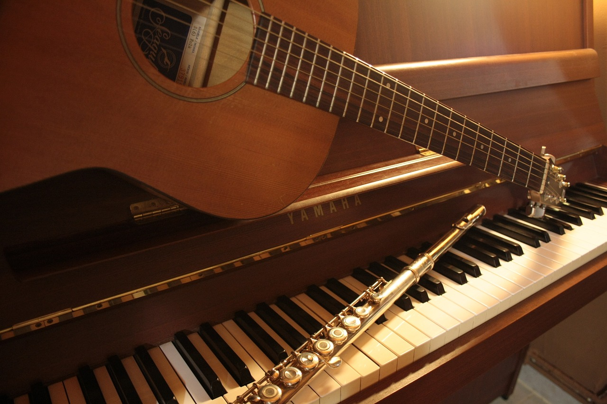
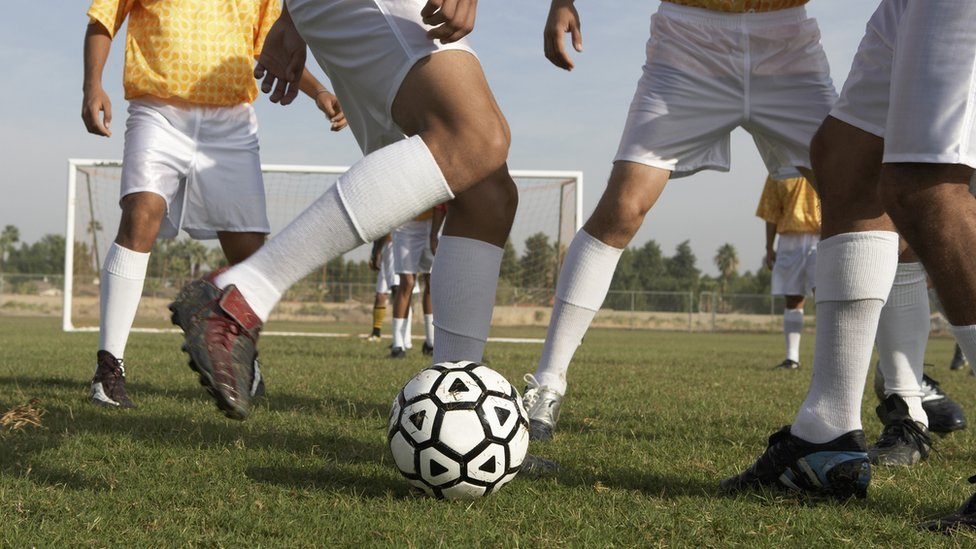

PASATIEMPOS

"MUSICA"
Uno de mis pasatiempos favoritos es la musica
Practico guitarra y piano en mi tiempos libres y me gusta casi cualquier genero musical
Tambien suelo hacer la mayoria de mis actividades escuchando musica

"ACTIVIDAD FISICA"
Otro de mis pasatiempos es el deporte, como jugar futbol, basquet, natacion, etc
Algunos dias con mas tiempo suelo ir al gimnasio o hacer ciclismo
La mayor parte de estas actividades las hago en grupo con amigos

"JUEGOS DE MESA"
Los juegos de mesa es una de las actividades que recien voy descubriendo
Generalmente los juegos de manera virtual aunque puede que pierda su escencia
Suelo jugar al ajedrez en su mayor parte